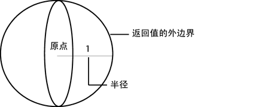
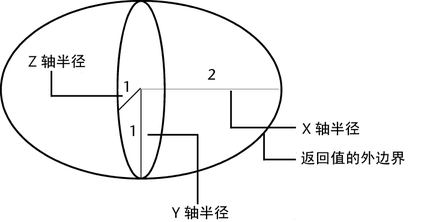
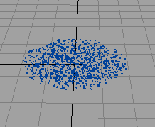

此函数返回所选择球形或者椭球形区域存在的随机向量值。椭球是沿其 X、Y 或 Z 轴缩放的球体。
向量 sphrand（浮点半径）
向量 sphrand（向量向量）
半径是存在返回向量的球体的半径。
向量是沿 X、Y 和 Z 轴的椭球体的半径。
若要控制该函数返回的随机值，请参见种子。
示例 1
sphrand(1)
此函数返回一个其随机选择的坐标位于以原点为中心、1 为半径的假想椭球体中的向量。以下是返回向量的一个示例：<<0.444，-0.427，0.764>>。

示例 2
sphrand(<<2,1,1>>)
此函数返回一个其坐标位于以原点为中心、沿 X 轴半径为 2、沿 Y 轴半径为 1、沿 Z 轴半径为 1 的椭球体中的向量。

可使用 sphrand 函数创建随机位于“X 轴”(X-axis)半径为 2、“Y 轴”(Y-axis)半径为 1、“Z 轴”(Z-axis)半径为 1 的椭球体中的 500 个粒子簇。
创建粒子椭球体
- 选择“nParticle > nParticle 工具”(nParticles > nParticle Tool) >
 。
。 - 输入 500 作为“粒子数”(Number of Particles)，1 作为“最大半径”(Maximum Radius)。
- 在工作区随机单击鼠标放置粒子。
- 在“表达式编辑器”(Expression Editor)中选择该粒子对象的粒子形状节点。
- 启用“创建”(Creation)。
- 输入此表达式：
position = sphrand(<<2,1,1>>);
Maya 会针对每个粒子执行一次该表达式。此操作会在由 <<2,1,1>> 指定的椭球体中围绕原点随机为每个粒子指定不同的位置。
